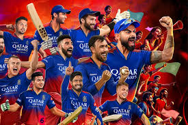

Royal Challengers Bengaluru
Star-studded team with loyal fans
About Royal Challengers Bengaluru

City: Bengaluru, Karnataka
Home Ground: M. Chinnaswamy Stadium
Captain (2025): Rajat Patidar
Owners: United Spirits
Established: 2008
RCB is renowned for its star-studded batting and passionate fanbase, with Virat Kohli as a cornerstone.
Records and Achievements
IPL Titles
0 (runners-up in 2009, 2011, 2016)
Playoff Appearances
8
Notable Record
Highest team total: 263/5 vs Pune Warriors (2013)
Key Player Stat
Virat Kohli: Leading run-scorer in IPL history (8,004 runs)
2024 Highlight
Mid-season turnaround with six consecutive wins to reach playoffs.